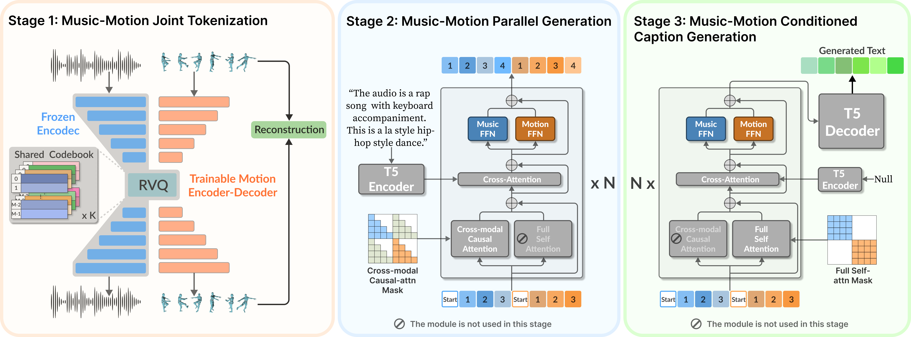

We introduce UniMuMo, a unified multimodal model capable of taking arbitrary text, music, and motion data as input conditions to generate outputs across all three modalities.
To address the lack of time-synchronized data, we align unpaired music and motion data based on rhythmic patterns to leverage existing large-scale music-only and motion-only datasets.
By converting music, motion, and text into token-based representation, our model bridges these modalities through a unified encoder-decoder transformer architecture.
To support multiple generation tasks within a single framework, we introduce several architectural improvements.
We propose encoding motion with a music codebook, mapping motion into the same feature space as music.
We introduce a music-motion parallel generation scheme that unifies all music and motion generation tasks into a single transformer decoder architecture with a single training task of music-motion joint generation.
Moreover, the model is designed by fine-tuning existing pre-trained single-modality models, significantly reducing computational demands.
Extensive experiments demonstrate that UniMuMo achieves competitive results on all unidirectional generation benchmarks across music, motion, and text modalities.
Methodology Overview

The training of UniMuMo consists of three stages:
In stage 1, we train a motion RVQ-VAE using the frozen codebook from a pre-trained music RVQ-VAE to encode motion into the same space as music.
In stage 2, we fine-tune a pre-trained music transformer decoder model on the text-to-music-motion task using the music-motion parallel generation scheme.
In stage 3, we fine-tune a T5 decoder for music-motion captioning using the previous music-motion decoder as a feature extractor.
Qualitative Results
(Please turn the audio on)
Text → Music + Motion
This table presents examples of UniMuMo's text-to-music-motion generation. The text prompts are randonly selected from our synthesized music and motion descriptions and paired with each other.
The audio is a rock song. This is a break style dance.
The music is a mix of indie pop and indie rock. The genre of the dance is house.
The audio is a k-pop song. This is a krump style dance.
The audio is a song with a fast tempo, upbeat rhythm, and a catchy melody. The genre of the dance is LA style hip-hop.
The audio is a latin pop song. The style of the dance is lock.
The audio is a pop song with a j-pop influence. The genre of the dance is middle hip-hop.
The audio is a disco song with a pop influence. This is a waack style dance.
The audio is a pop song with a fast tempo, infectious drumming, keyboard harmony, and a groovy bass line. The style of the dance is krump.
The music is a chillwave genre. The style of the dance is break.
Motion + Text → Music
This table presents examples of UniMuMo's motion-text-to-music generation. The motion sequences are selected from the test set of AIST++, paired randomly with our
synthesized music descriptions. Note that in the videos shown below, only the audio part is generated by ours.
The audio is a rock song with elements of alternative rock.
The audio is a pop song with a soulful feel.
The audio is a power pop/rock song with a catchy melody and upbeat rhythm.
The audio is a reggae pop song.
The audio is a K-pop song with a fast tempo, punchy drumming, funky bass lines, keyboard harmony, and synthesiser arrangements.
The audio is a dancehall song with a reggae influence.
The audio is a pop song with a new wave influence.
The music is a fusion of pop punk and rock, with a strong emphasis on the drums and bass.
The audio is a classic rock song with a fast tempo, catchy rhythm, and upbeat melody.
Music + Text → Motion
This table presents examples of UniMuMo's music-text-to-motion generation. The music tracks are selected from the test set of Music4All, paired randomly with our
synthesized motion descriptions. Note that in the videos shown below, only the motion part is generated by ours.
The style of the dance is ballet jazz.
The style of the dance is break.
The genre of the dance is house.
The genre of the dance is krump.
The style of the dance is LA style hip-hop.
This is a lock style dance.
This is a middle hip-hop style dance.
The genre of the dance is waack.
The style of the dance is LA style hip-hop.
Music → Text
This table presents examples of UniMuMo's music-to-text generation. The music tracks are randomly selected from the test set of MusicQA dataset.
The audio is a rock song with a strong emphasis on the drums, bass, and guitar.
The audio is a reggae song with a roots reggae feel.
The music is a mix of progressive rock and classic rock, with a strong emphasis on the guitar and drums.
The audio is a techno song with a fast tempo, synthesiser arrangements, digital drumming, and a strong bass line.
The music is a mix of post-punk and new wave, with a strong emphasis on the drums and bass.
The music is a mix of electronic and acoustic instruments, with a focus on synthesizers and electronic percussion.
The music is described as ambient, which means it has a calm and soothing atmosphere.
The music is a slow and melancholic folk song with a lo-fi recording quality.
Motion → Text
This table presents examples of UniMuMo's motion-to-text generation. The motion sequences are randomly selected
from the test set of HumanML3D dataset.
A person steps backwards, sits down, stands up and steps forward again.
A person jumps and spins 180 degrees.
A person is doing the chacha dance.
A person side steps to the right and then to the left.
A person holds their arms up and twists their torso around.
A person bounces their arms up and down while moving their elbows up and down.
A person raises their arms and then kneels down.
A person leans to the left and looks around.
Music Motion Alignment
This table presents examples of our proposed music-motion alignment methods. In each row, a motion sequence is paired with different music tracks.
Music and motion are all from AIST++ dataset.